My Work
Portfolio
A curated selection of professional projects, campaigns, and strategic contributions from my time in public relations and corporate communications — demonstrating strategy, execution, and measurable impact.
I conducted and authored a featured byline in the June 2025 issue of Healthcare Marketer's Exchange, interviewing CMI Media Group's Director of Innovation following her attendance at SXSW. Through a structured Q&A, we explored emerging technologies, evolving consumer behavior, future-facing healthcare marketing trends, and the skills modern healthcare marketers must develop to stay competitive.
The conversation translated on-the-ground innovation insights into actionable perspectives for industry professionals — covering AI's role in healthcare advertising, shifts in patient empowerment, podcast strategy, and the most exciting innovation she encountered: the revival of the woolly mammoth by Colossal Biosciences.
I wrote, edited, and positioned the full piece for publication — ensuring it reflected both executive credibility and the editorial quality of a nationally distributed trade publication.
Outcome & Impact
The byline positioned CMI Media Group as a forward-thinking leader in healthcare marketing innovation while extending SXSW insights to healthcare marketers, HCPs, and industry stakeholders who were unable to attend. It strengthened executive visibility and earned direct recognition from the publication's publisher on LinkedIn.
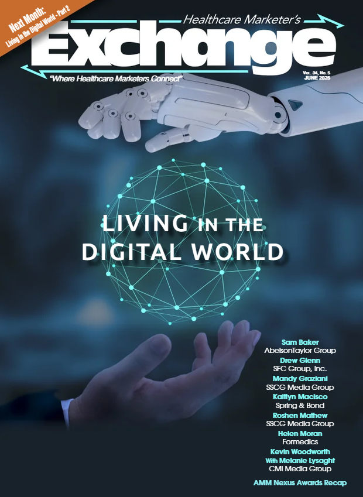
Healthcare Marketer's Exchange — June 2025 Cover
Throughout Q3 2025, I planned, promoted, coordinated, and helped curate CMI Media Group's largest event of the year — Agility: Hype To Hope To Health — a full-scale healthcare marketing conference held at the Pennsylvania Academy of the Fine Arts in Philadelphia.
The event's theme was deeply intentional. Following a period of uncertainty brought on by the pandemic and the shift to remote work, Agility 2025 was designed not just as a conference, but as a moment of reconnection — bringing those in the industry together in person, providing a sense of relief and renewed energy after years of distance. It was about seeing faces, building relationships, and rediscovering the power of being in the same room.
Centered around the future outlook of healthcare and the genuine hope that innovation holds for the industry, the event gave clients, partners, and attendees unique perspectives on the critical topics and trends shaping healthcare marketing — and challenged them to think boldly about what comes next.
My responsibilities spanned the full event lifecycle: pre-event social media promotion, managing executive speaker coordination, logistics, and compliance documentation for nationally recognized industry leaders including Mick Ebeling (Not Impossible Labs) and Daymond John (Shark Tank / FUBU), managing on-site admission and operations, and producing live and post-event social coverage including highlights and recap content.
Outcome & Impact
Agility 2025 was recognized as one of the industry's greatest successes — earning a Gold MarCom Award for Excellence in Strategic Communications under the "Special Event" category, an award I helped research, draft, and submit from start to finish. The event was celebrated for the uniqueness of its experience and the value it delivered to attendees — bringing together clients, partners, and industry leaders at a moment when in-person connection meant more than ever.
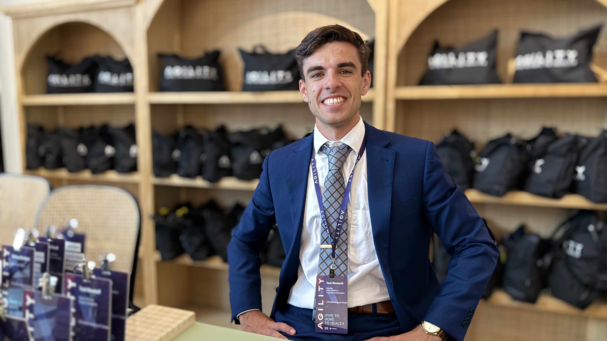
On-site at Agility: Hype To Hope To Health
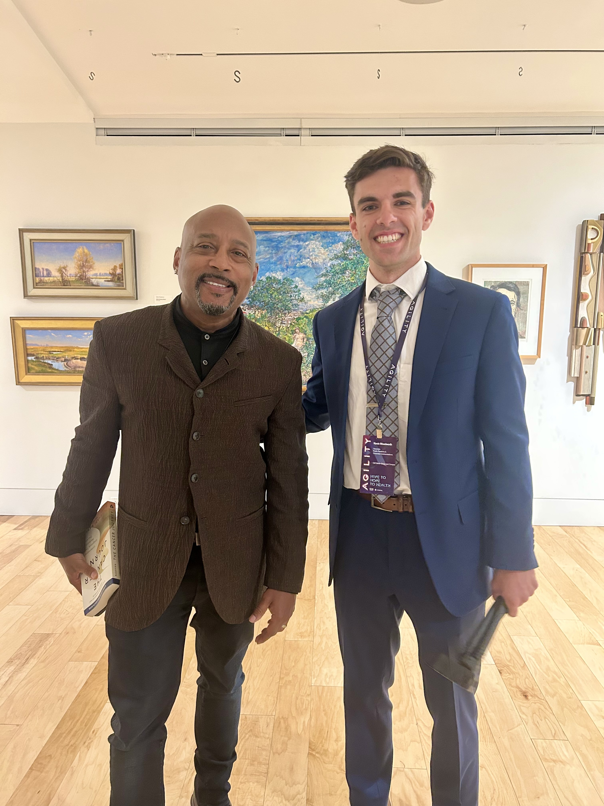
With Daymond John
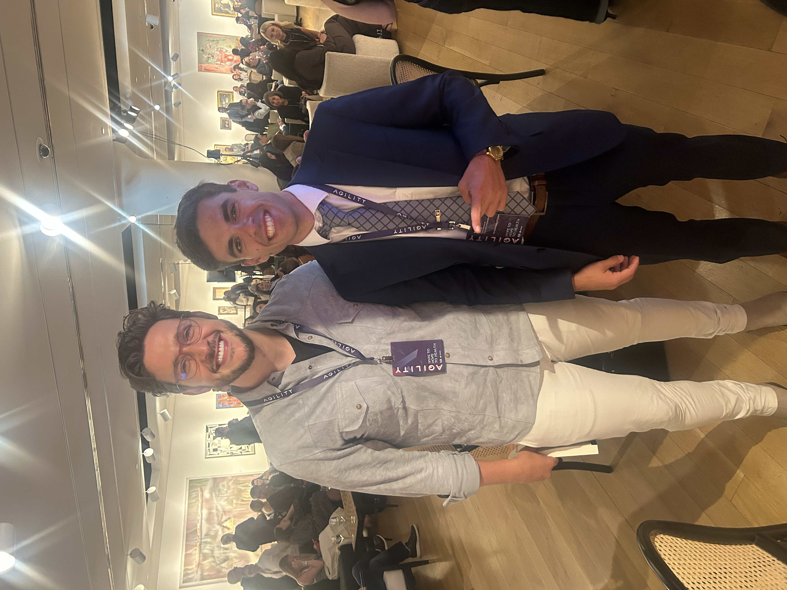
Networking with Dr. Mike Varshavski at Agility

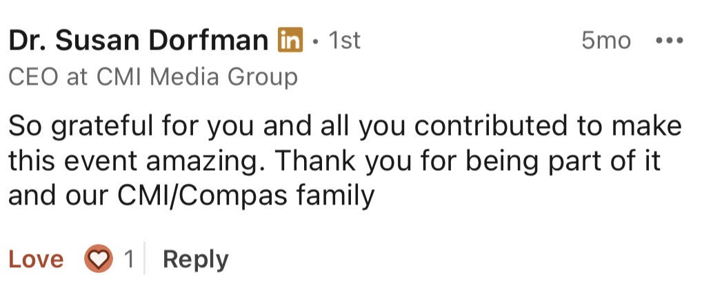
CEO · CMI Media Group — Post-Event Recognition & Gratitude
In October 2025, I was deployed by CMI Media Group as ground coverage representative at Advertising Week New York — one of the most prominent annual gatherings of media, marketing, and advertising professionals in the country.
I supported three panels featuring CMI executives, producing daily recap reports for internal distribution, capturing multimedia content for social platforms, and amplifying executive insights through company communications. Beyond assigned coverage, I proactively attended cross-industry panels to deepen my understanding of agency life, digital innovation, and media strategy beyond healthcare.
Among the many industry leaders I had the opportunity to connect with was Gary Vaynerchuk (Gary Vee) — entrepreneur and one of the most recognized voices in digital marketing and brand strategy.
Outcome & Impact
Delivered real-time thought leadership updates to internal stakeholders and external audiences, reinforcing CMI's industry presence and ensuring visibility across one of the media industry's premier annual conferences.
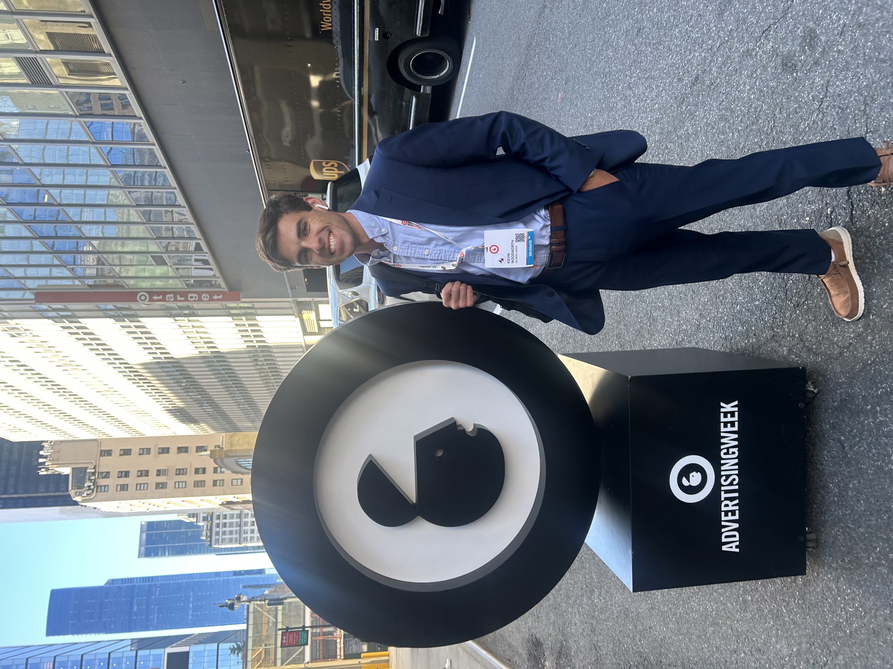
Advertising Week New York 2025
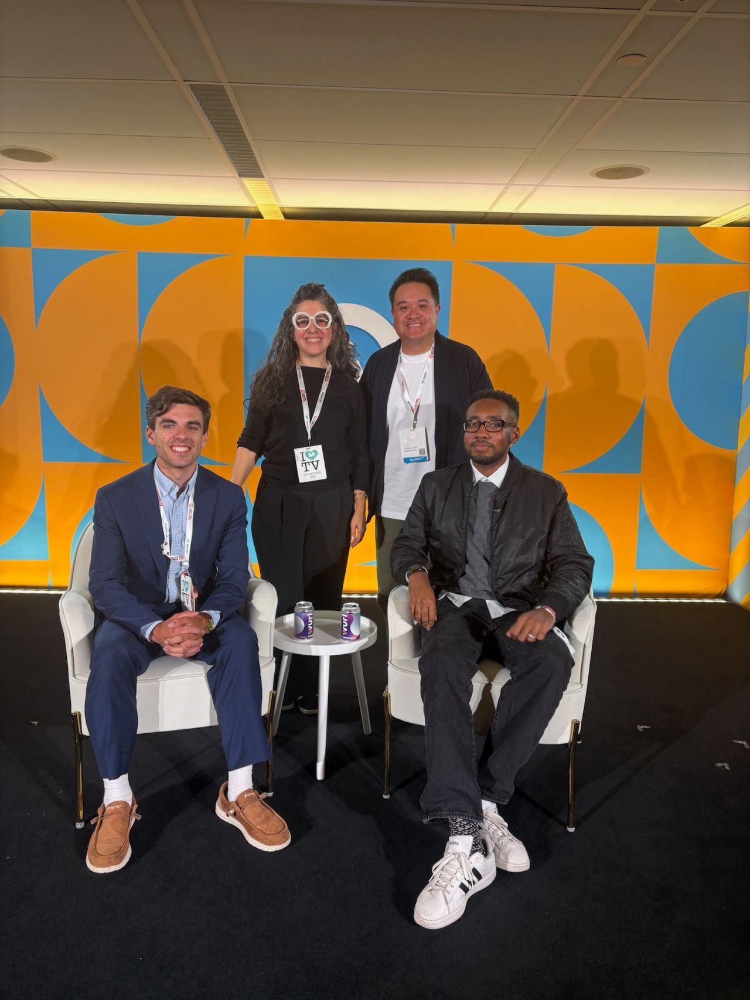
Panel coverage at AWNY
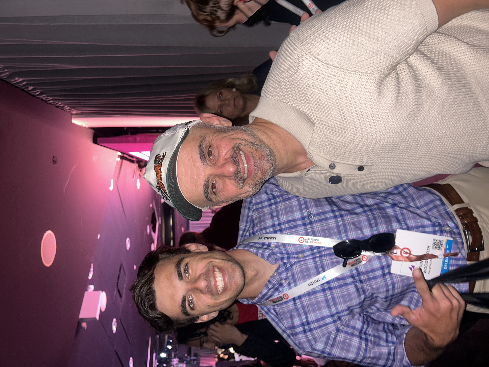
With Gary Vaynerchuk
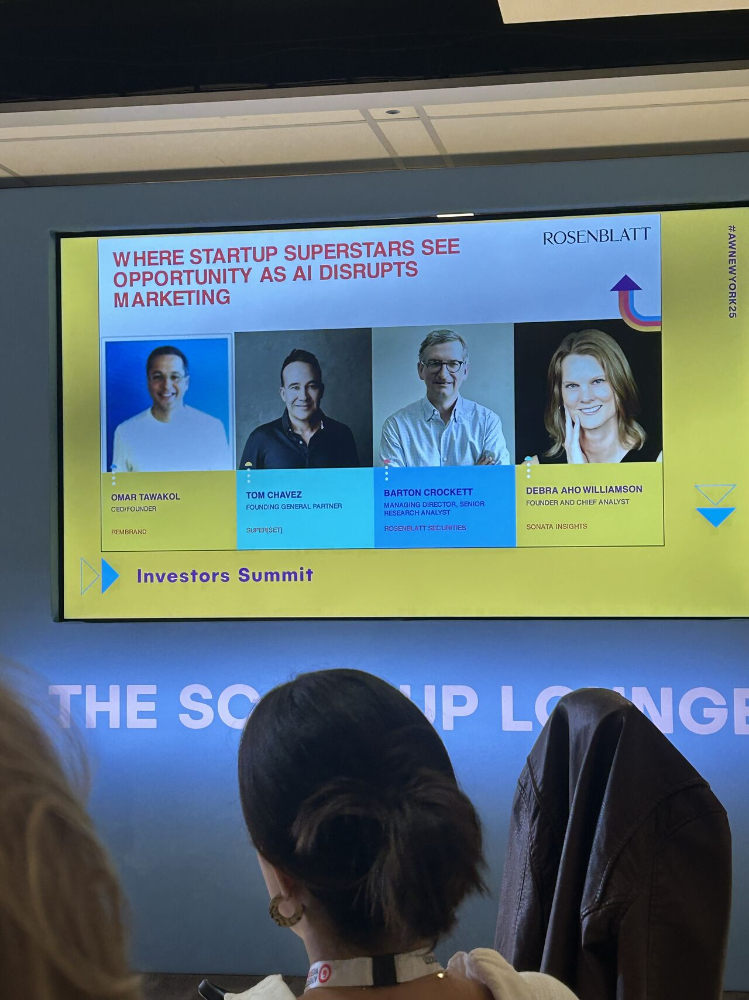
Learnings from Investors Summit — AI Disrupts Marketing
Throughout 2025, I oversaw the full communications lifecycle for CMI Media Group executives attending and speaking at industry conferences — from the moment an event was announced to the moment our audience read about it.
For panelists and speakers, I crafted and published pre-event social media content to promote their sessions, building anticipation and driving visibility for both the executive and CMI's brand ahead of each appearance.
For all attendees representing CMI, I provided strategic briefings on what types of photos, moments, and content to capture on-site — ensuring we returned with everything needed to tell a compelling story across our channels. I directed the visual and editorial angle before anyone stepped foot in the door.
Post-event, I drafted recap writeups for CMI's industry newsletter, The Scoop — synthesizing key takeaways, executive insights, and industry learnings into polished content distributed to healthcare marketing professionals across the country.
Conferences covered include the DHC Group Summit, MediaPost Insider Summit, Meta Health Summit, Salesforce Dreamforce, HLTH Summit, and more.
Outcome & Impact
Built a consistent, repeatable content pipeline around industry events — amplifying executive visibility before, during, and after each conference. Ensured CMI's audience never missed a moment, turning every attendance into a multi-touchpoint communications opportunity.
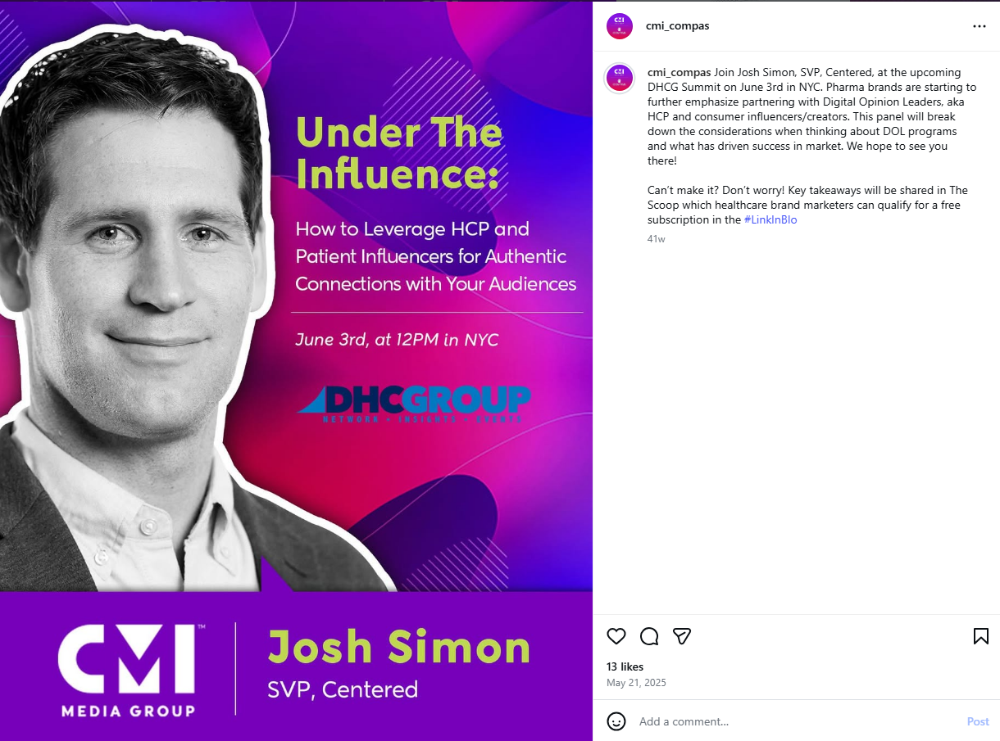
Josh Simon — DHC Group Summit
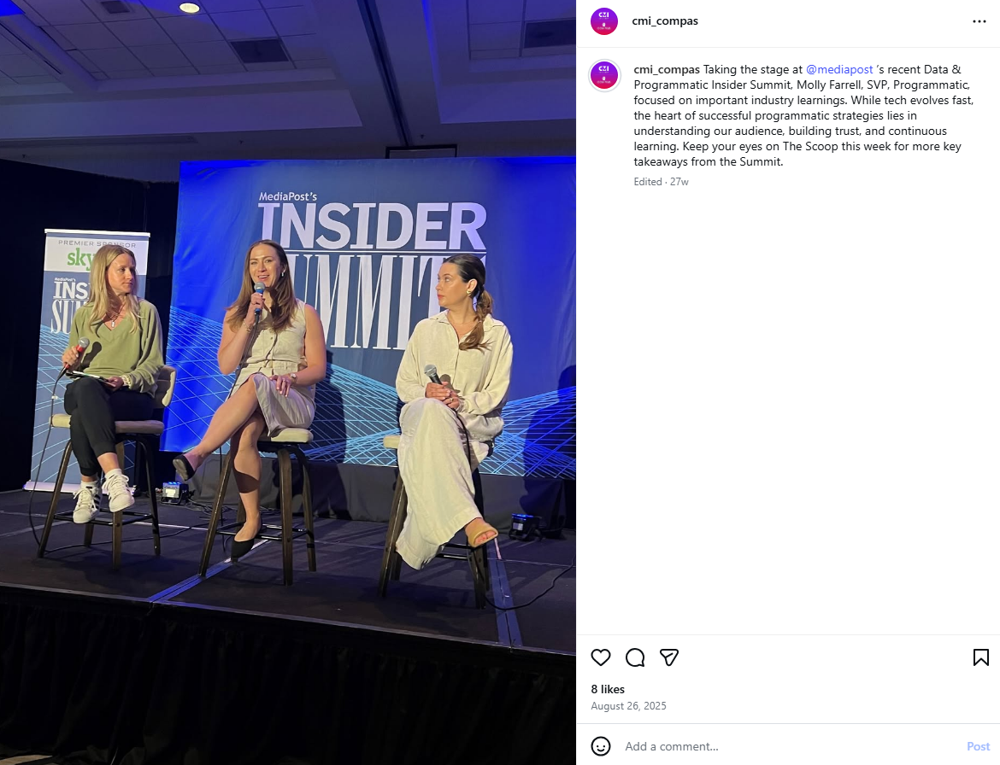
MediaPost Insider Summit
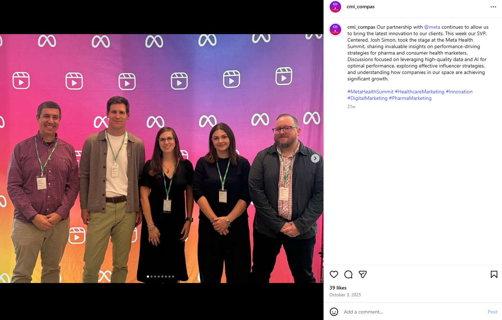
Meta Health Summit
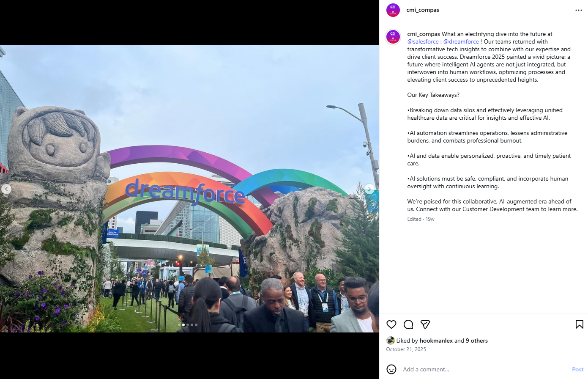
Salesforce Dreamforce 2025
As part of the PR & Communications team, I managed and optimized CMI Media Group's multi-platform social media presence across LinkedIn, Instagram, X, and Facebook — producing content that reflected the agency's brand voice, promoted events, amplified executive visibility, and engaged its professional audience.
I collaborated with internal teams to plan and produce short-form video content, speaker announcements, event promotional graphics, thought leadership posts, and event recap highlights — each crafted to drive engagement and reinforce CMI's position as a leading voice in healthcare marketing.
I conducted ongoing trend analysis within healthcare marketing and agency spaces, and compiled quarterly PR and communications performance reports for leadership review.
Outcome & Impact
Contributed to sustained audience growth and engagement across platforms throughout 2025 — supporting CMI's digital footprint, brand visibility, and executive presence within the healthcare marketing industry.

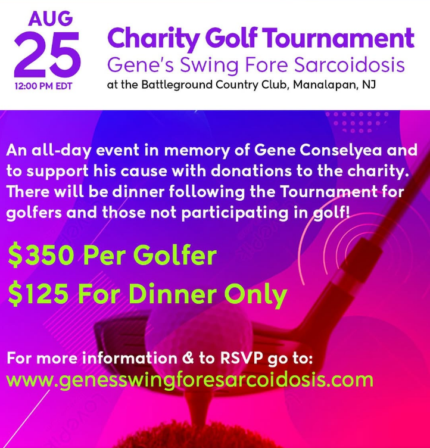
Gene's Swing Fore Sarcoidosis — event promotion
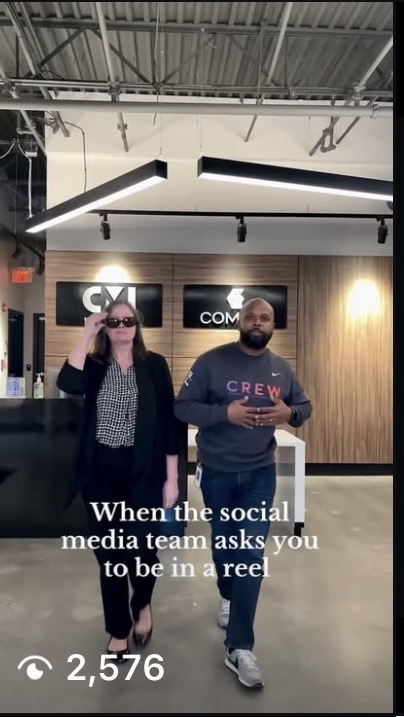
2,576 views — CMI Office Reel
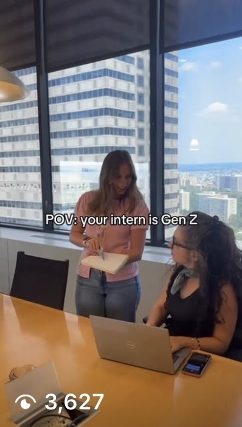
3,627 views — Gen Z Intern Reel
Reels produced & promoted to drive social engagement
I led the research, strategy, writing, and submission of several industry award nominations for CMI Media Group and its executive leadership team — identifying optimal programs, crafting compelling submission narratives, and coordinating with leadership to powerfully represent the agency's achievements and competitive strengths.
This was high-stakes PR work requiring strategic positioning, persuasive writing, and a deep understanding of the healthcare marketing landscape. The results speak for themselves.
Outcome & Impact
Secured multiple award wins and finalist placements across the industry's most respected programs — significantly elevating CMI Media Group's brand recognition, executive visibility, and competitive standing within the healthcare marketing community.
🏆 Winner
CEO of the Year
PM360 ELITE Trailblazers Awards
2025
🥇 Gold Winner
Special Event
MarCom Awards
2025
🏆 3× Winner
40 Under 40
MM+M
2025
4× Finalist
Multiple Categories
US Search Awards
2025
Finalist
Multiple Categories
MM+M Awards
2025
Shortlisted
Agency Sustainability
Campaign Ad Net Zero Awards
2025
In late Q3 2025, I led a competitive research initiative commissioned for CMI Media Group's Executive Leadership Team, focused on omnichannel offerings within the healthcare marketing space. Leveraging my knowledge of CMI's proprietary Empower AMO platform, I conducted a comprehensive analysis of top competitor omnichannel strategies — examining messaging frameworks, positioning tactics, platform capabilities, and promotional approaches.
The project synthesized multi-source industry intelligence into a strategic recommendation framework designed to strengthen CMI's competitive positioning and support long-term differentiation within the omnichannel space.
ELT
Delivered directly to Executive Leadership Team
Q3
Completed on schedule in Q3 2025
360°
Full competitive landscape coverage
Outcome & Impact
Delivered a comprehensive executive-level competitive analysis that informed future positioning strategy and supported long-term differentiation within the omnichannel healthcare marketing space. Due to its confidential nature, specific findings are not publicly shared.
Prior to joining CMI Media Group, I worked as a freelance news writer for Lancashire Hudson — producing editorial-quality news content on assignment, ghostwritten for third-party publications and distributed through industry email channels.
Each piece required rapid research, accurate sourcing, and the ability to craft two distinct versions of the same story: a clean, journalistic web article and a punchy, high-open-rate email headline optimized for click-through. This dual-format discipline sharpened both my long-form writing and my instinct for audience-first copy.
Topics spanned human interest, entertainment, pop culture, and science — reflecting the breadth and adaptability expected of a working freelance news writer.
Context
All articles were ghostwritten for third-party use and are not publicly attributed. Samples are provided here as writing portfolio pieces only.
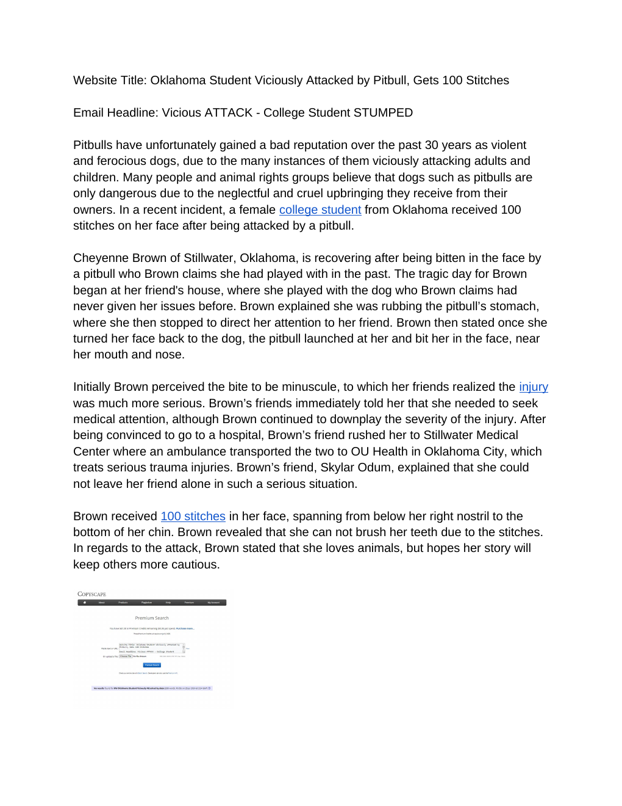
Oklahoma Student Viciously Attacked by Pitbull, Gets 100 Stitches
Email headline: "Vicious ATTACK — College Student STUMPED"
A female college student from Stillwater, Oklahoma received 100 stitches after being bitten in the face by a pitbull she had previously played with.
Click image to enlarge
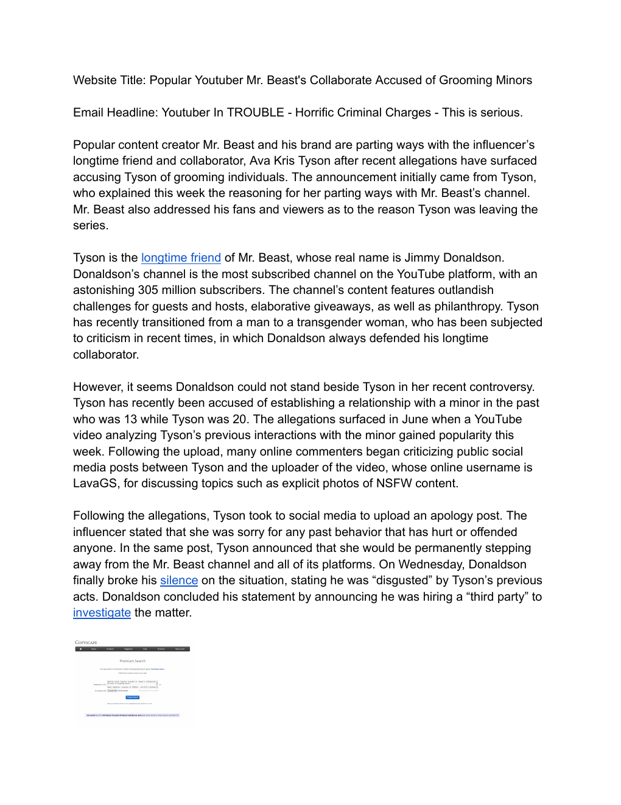
Popular YouTuber Mr. Beast's Collaborator Accused of Grooming Minors
Email headline: "Youtuber In TROUBLE — Horrific Criminal Charges"
Covered the controversy surrounding MrBeast collaborator Ava Kris Tyson, including public statements from both parties.
Click image to enlarge
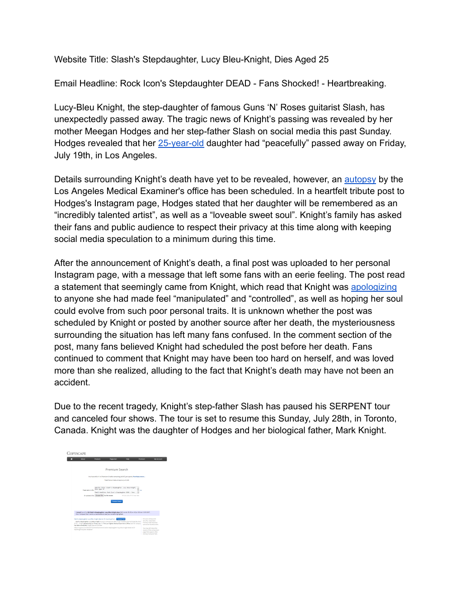
Slash's Stepdaughter, Lucy Bleu-Knight, Dies Aged 25
Email headline: "Rock Icon's Stepdaughter DEAD — Fans Shocked"
Reported on the passing of Lucy-Bleu Knight, stepdaughter of Guns N' Roses guitarist Slash, handled with care and sensitivity.
Click image to enlarge
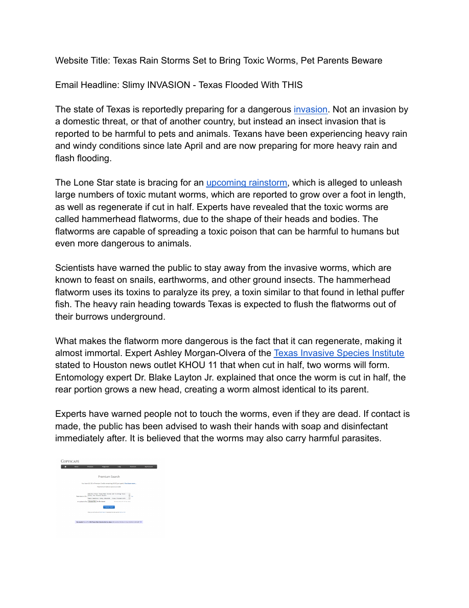
Texas Rain Storms Set to Bring Toxic Worms — Pet Parents Beware
Email headline: "Slimy INVASION — Texas Flooded With THIS"
Reported on the expected emergence of hammerhead flatworms following severe Texas flooding and the dangers posed to pets.
Click image to enlarge
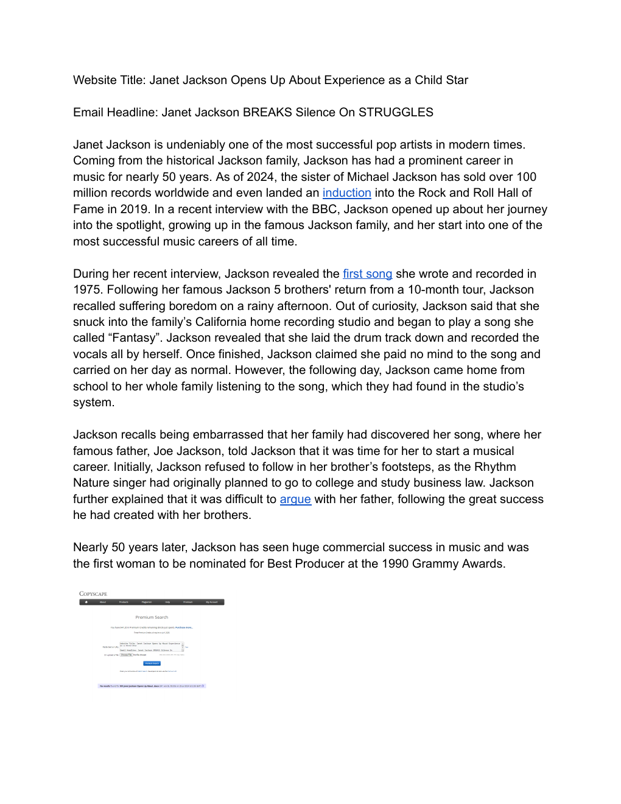
Janet Jackson Opens Up About Experience as a Child Star
Email headline: "Janet Jackson BREAKS Silence On STRUGGLES"
Covered Janet Jackson's candid BBC interview on growing up in the spotlight and her path to over 100 million records sold.
Click image to enlarge
New Jersey League of Municipalities Convention
Kean University · Communications Media Journalism (CMJ)

On-site vendor interview — Atlantic City

Field interview — convention floor
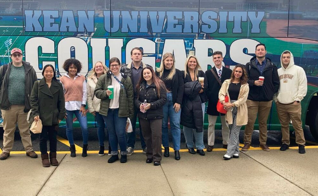
Kean University CMJ team — NJ League of Municipalities Convention
In November 2022, I participated in media coverage of the New Jersey League of Municipalities Convention in Atlantic City as part of Kean University's Communications Media Journalism department. Working alongside a student production team, contributed to filming event coverage, conducting interviews with vendors and attendees, and documenting key discussions throughout the convention.
The experience provided hands-on exposure to professional event coverage, including attendance at press conferences hosted by the New Jersey League of Municipalities and on-site interviews with participating organizations.
Following the event, I produced and edited a highlight reel for a digital film course project, compiling interview footage and convention coverage into a cohesive recap showcasing the event's insights and key moments.
Outcome & Impact
Delivered a polished event recap video that captured the convention's atmosphere, industry insights, and community engagement — demonstrating practical skills in interviewing, editing, and multimedia storytelling.
Nancy Leonard
Publisher · Healthcare Marketer's Exchange
"Thanks for sharing, Kevin! We appreciate your participation. Very insightful!"
Carly Kuper
PR at CMI Media Group & Compas · PR News Top Women in PR
"So good 👏👏👏"